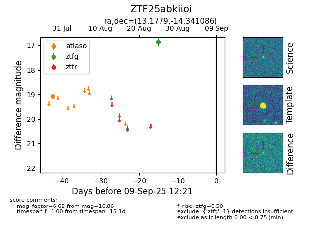

FINK: ZTF25abkiioi
Lasair: ZTF25abkiioi
ALeRCE: ZTF25abkiioi
ZTF25abkiioi (ztf,fink)
equatorial (ra, dec) = (13.1779,-14.34109)
galactic (l, b) = (124.3254,-77.20939)

last atlaso=19.07, ztfg=16.86
1 atlaso, 1 ztfg detections